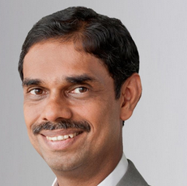
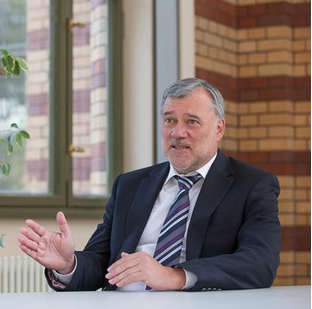

| Home | Registration | Program | Resources | Sponsors |
Welcome to the homepage of the Online Seminar Series on Critical Transitions in Complex Systems, a monthly seminar series that focusses on "tipping points" or critical transitions in complex systems. Complex systems are characterized by the interactions that take place amongst different sub-components, forming a unified whole system. Tipping points have been reported in very different complex systems including, but not limited to, financial markets, ecosystems, international economy, climate, and combustion systems. In this series, we will try to bring researchers from different fields to talk about their work, with a special emphasis on the interdisciplinary application of the critical transitions. Suggestions are always welcome!
The seminars will usually be conducted around 10th and 20th of each month, at 2:00 pm - 3:00 pm IST on Zoom platform. The links for the upcoming talks will be made available in the schdule, and will also be sent via the mailing list.
If you would like to talk at our series, feel free to contact Ankit Sahay. The presentation can be either about your own work or on some interesting article related to critical transitions.
This seminar series is organized by Dr. R. I. Sujith from Indian Institute of Technology Madras , and is co-hosted by Dr. Jürgen Kurths from Potsdam Institute for Climate Impact Research.
|  |
|
 |
| © Ankit Sahay |